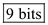
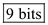
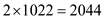

Refer to Figure 15.27 in the textbook.
Calculate the number of columns and rows in a 256 K bit square array.

Hence, a 256 K bit square array contains 512 rows and columns.
Calculate the number of address bits,  .
.
Thus, the required number of address bits,  is .
is .
For a 255 K-bit square array has 512 rows and 512 columns. Hence it requires 9 address bits for row selection and 9 address bits for columns selection.
From the Figure 15.27, 9 levels of pass gates are used. Because for 256 K-bit square array requires 9 row address bits and 9 column address bits.
Calculate the number of transistors needed for a tree decoder.
Therefore, a tree column decoder for 9 bits needs 1022 pass transistor. But it uses both the true and complement bit lines. Therefore, the total number of transistors needed for a tree decoder is .
Thus, the total number of pass transistors needed for a tree decoder is .